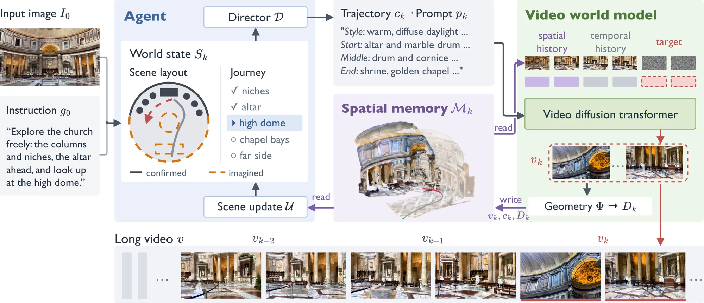
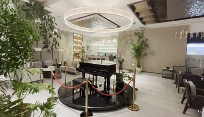
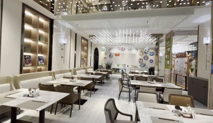
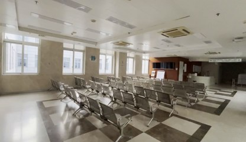
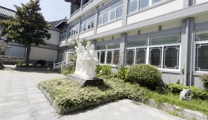

Abstract
Recent interactive video world models generate visually compelling videos from a single image, following user-provided camera motion and text prompts. However, such low-level control demands substantial user effort to realize a high-level intent, and the generated world struggles to remain persistent as the exploration proceeds. In this work, we present AgiWorld, an agentic video world model that explores and builds a persistent world from a single image and a free-form instruction. For high-level planning, our agent AgiWorld-Agent designs the world and the journey through it in a world state and directs the exploration. For low-level realization, our video world model AgiWorld-WM generates the video chunk by chunk and stores it with its geometry in a spatial memory, from which the agent updates its world state. This closed loop keeps the world faithful to the user's intent and keeps the agent's world state consistent with the generated content throughout the exploration. We co-design the two levels around the shared spatial memory and an interface of metric camera trajectories and structured prompts. Qualitative results and ablations show that AgiWorld builds persistent worlds from free-form instructions over minute-long journeys. Persistence thus arises not from the video model alone but from its closed loop with the agent.
AgiWorld results
Method
AgiWorld-Agent
A world-building agent. It designs the world and the journey in a world state, directs every chunk, and updates its plan from what was generated.
AgiWorld-WM
A state-of-the-art camera-conditioned autoregressive video world model. It generates the video five seconds at a time and keeps everything it generated in a point-cloud spatial memory. To handle occlusion and accumulated geometric errors over long rollouts, we propose occlusion-aware history selection, which retrieves past views by surface visibility, and reliability-based memory maintenance, which prefers reliable geometry and earlier observations.

-
1
World state
A metric layout of confirmed and imagined elements, plus the stages of the journey.
-
2
Director
Turns the plan into a camera trajectory and a structured prompt.
-
3
AgiWorld-WM
Generates the next 5 s from its spatial memory and writes it back with depth.
-
4
Review and state update
Checks the chunk against the plan and updates the world state.
Agentic generation
Journey
World state
AgiWorld-WM
Camera-controlled image-to-video generation




Comparison with SOTA models
BibTeX
@article{fang2026agiworld,
title={{AgiWorld}: An Agentic Video World Model for Building Persistent Worlds},
author={Fang, Shaoheng and Mei, Yiqun and Jiang, Hanwen and Sun, Xin and Zheng, Haitian and Tan, Hao and Sunkavalli, Kalyan and Pavlakos, Georgios and Huang, Qixing and Hu, Yiwei},
journal={arXiv preprint},
year={2026}
}